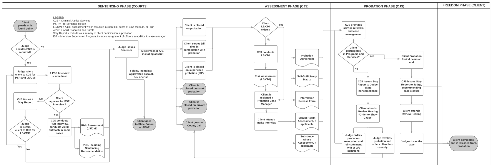

Introduction
ClientComm was not the only tool we have been developing, nor has our work occurred in a "linear" manner. Rather, multiple concurrent Learn, Build, Measure trajectories were present at any given moment over the first half of this fellowship. Learning most often predicated most other activities as our time spent in Salt Lake County would expose us to either opportunities or unknown pain points. Such opportunities presented themselves often in time sensitive ways. If we encountered a problem that a certain organization was dealing with, we focused on speed and delivery to build a tool that addressed that issue and would deliver it within a short time frame - sometimes as few as 2 days.
By engaging in such targeted and speedy delivery, we were able to also begin measuring our results nearly immediately. Positive engagements would not only substantiate near-immediate validation or dismissal of our hypothesis, but it would also provide us with hard evidence to frame future discussions. If the tool was successful, then future discussions would thus be predicated not on garnering buy in, but rather discussing why it should cease development given the positive initial findings.
Select Project: CourtSMS MVP
A simple text messaging tool that pulls the latest court date information and feeds it into a database. You text in with the system, providing your first and last name. If a corresponding court date is found from this data, then the system will text back and inform the user of said date and location. The tool is fully functional and conceptually based on CourtBot, a previous Code for America project. Furthermore, it is presently pulling from a valid and up to date secure FTP with the latest court date. Indeed, this project could be rolled out at any moment to the public. So why don’t we do it? Our team believes that rolling this tool out first would in fact limit the ability for ClientComm to become fully fleshed. As a result, we are rolling it out, but as a feature within ClientComm. The purpose for this is that it enables us to focus more deeply on user needs in creating a successful messaging and case management communications tool that facilitates longitudinal communication and support.
Select Project: System Diagramming
This project involved interviewing dozens of staff at Criminal Justice Services (CJS), as well as running a number of workshops in order to develop a complete system diagram of CJS. This is not something that had ever been prior accomplished. The result enabled us to better understand each individual's context within the broader system, which has made the deployment of ClientComm far more effective thanks to intelligent targeting of key individuals.
 Above: Criminal justice system probation trajectory system diagram.Select Project: Archetypes
This project enabled us to create categories that would assist in the analysis of clients as they used our tool over time. By creating a category for each user, we were able to segment populations by motivations, rather than by focusing on using negative associative measures, in particular their SLPRI risk assessment score. As ClientComm matures and client close out data becomes more robust, associating these clients by type will enable us to view ClientComm’s effectiveness from the perspective of client motivation and to observe if certain typologies most often correlate with ClientComm playing a significant role in that clients trajectory through the criminal justice system.